Bootleg-玩转时尚艺术潮流! | Jason. S. Wright 「艺术访谈」
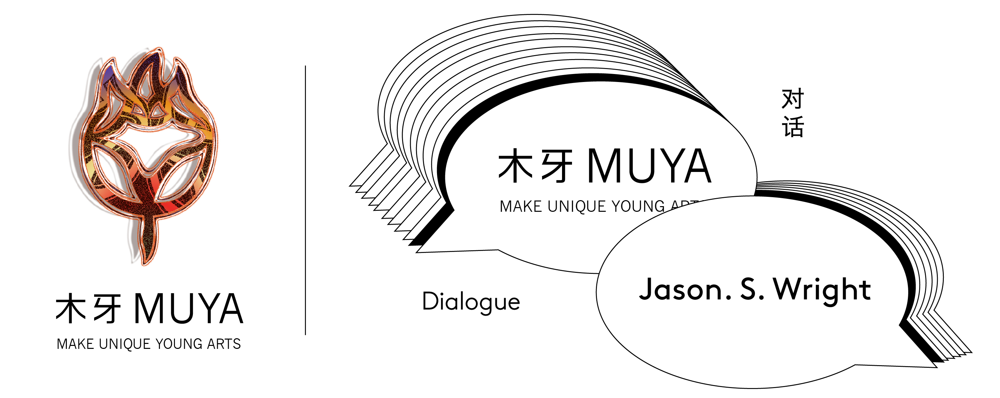欢迎来到木牙Make Unique Young Arts，让我们来探索印花，T-shirt，Bootleg的世界～
随手绘画是记录灵感的最好方式，没有目的，不分场合，不预设材料，是最纯粹的灵感释放。也是隐藏在作品背后让作品变得有意思的关键。而有时候这些插画比作品本身更加吸引人！但很多时候都只有艺术家自己才能看到这些有趣的插图。
Drawing is one of the best ways to record inspiration. It has no purpose, no occasion, and no solid materials. It is the purest release of inspiration. It's also the key to making the work interesting behind the scenes. Sometimes the illustrations are more attractive than the work itself! But most of the time only the artist can see these interesting illustrations.
收集古怪的事物或者玩物也是很多设计师的一大喜好，将收集的事物进行二度创作与图形转化，受到生活的不断启发，使用翻玩的方式创造出设计师奇幻的多彩世界，也是设计师对于生活时尚的艺术看法。翻玩（Bootleg），即在原有设计或产品的基础上，进行玩味、创意性的改造。
Collecting weird things and objects is also a great hobby of many designers. They can create and transform the collected things with graphics. Inspired by the constant inspiration of life, they can create a fantastic and colorful world for designers by transforming and playing objects, which is also the artistic view of designers on life and fashion. Bootleg refers to a playful and creative renovation based on the original design or product.
今天我们有幸邀请到美国独立设计师Jason. S. Wright做客木牙MUYA和我们聊聊他的设计经历和创作来源。
Today we have the honor to invite American independent designer Jason S. Wright to join MUYA to talk with us about his design experience and source of creation.
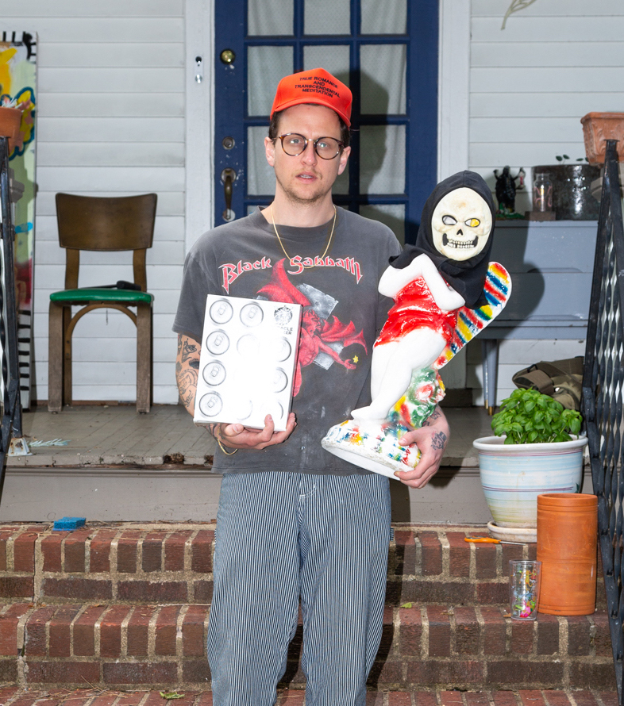
1987年生于美国，在美国弗吉尼亚州里士满生活和工作。Jason S. Wright的作品是对创造性实践和精神实践的平行探索。在他通过媒体，材料和心灵进行搜索时，这条共生的纽带不断地引导着新的发现。作品深深的植根于传统的自我出版和“翻玩”（Bootleg）的意识形态，这样的创造环境使得自己的世界更加的富有成果而不是与其他人作品同化。Wright 通过个人旅程挖掘他个人的想法和叙事，一步一步地，扎扎实实的成为他前行道路的铺路石。
Born 1987, US. Lives and works in Richmond, VA, US. Jason S. Wright’s work is an exploration of the parallels found within the creative practice and spiritual practice. A symbiotic bond that is constantly leading to new discoveries as he searches through media, material, and the psyche. Deeply rooted in the underground traditions of self-publishing and bootleg ideology where it is more fruitful to create your own world rather than assimilating to someone else’s, Wright mines his personal journey for ideas and narratives that become the building blocks for a path he takes one step at a time, one day at a time.
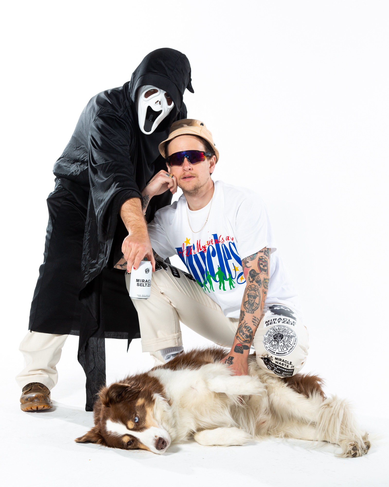


工作室及品牌名称：UDLI Editions, House of Miracles, Miracle Seltzer, Peace On Earth Review…这些品牌互相关联只是将我创意兴趣的不同表达与不同合作者核心概念相互联系。
UDLI Editions, House of Miracles, Miracle Seltzer, Peace On Earth Review…All related but different expressions of my creative interests with an essential network of collaborators.


➤ 木牙MUYA: 现在艺术品电子商务如此之多，各种“自媒体”平台，您如何推广自己的作品？一些艺术家厌倦了在多个平台上注册和推广自己。您改善这种情况的独特方式是什么？
Now there are so many art e-commerce and various "we media" platforms, how do you promote your works? Some artists are tired of registering and developing their practices on multiple platforms. What are your unique ways of improving your practices?
Jason: 我主要只使用Instagram。我与推广有着怪异的关系，我相信吸引力而不是推广。我肯定会因为这样的理论而错过一些商业的机会，但是我觉得我将我的作品融入了一些这样的风格，使得我与商业建立了更深入，更有意义的联系。
I mostly only use Instagram. I have a weird relationship with promotion, I believe in attraction rather than promotion. I definitely miss out on some opportunities for commerce with this philosophy but I feel like I make deeper, more meaningful connections to those who I engage with my work with this style.
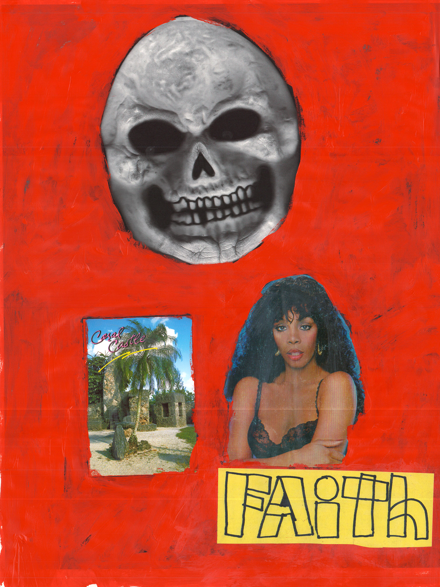
➤ 木牙MUYA: 您如何看待艺术家经常在各种平台上注册并导致职业倦怠的现状？您有这个问题吗？
What do you think about the current situation where artists frequently register on various platforms, which results in burnout? Do you have this problem?
Jason: 我使用Instagram，但我尝试保持其处于正常运行的状态。我将其视为一种社交媒体工具，可以与人交流，仅此而已。我没有投入太多精力在这上面，并且也不太管担忧关于关注和赞的事情，我仅仅只是想尝试玩/使用的开心而已。
I only use Instagram but I try to keep it healthy. I look at it as a social media tool where I am able to connect with people and nothing more. I don’t put too much stock in it and I don’t worry about follows and likes, I just try to have fun with it.


➤ 木牙MUYA: 哪些工作对于您当下的事业最为有所帮助？您具体都会做什么呢？大概做多久呢？
Which job would be most helpful for your current career? What exactly do you do? How long?
Jason: 我很幸运的认为艺术家的职位是我生活最主要的消遣。我为自己做东西并且将他们延伸出不同的表现方式。我是Miracle Seltzer的其中一位创意总监并与B. Thom Stevenson成为长期合作伙伴，我也是Be With新时代媒体公司的创意总监。哦！我还教课，教课是个很有趣的工作并且可以保持活力和兴奋的思维状态。
I am fortunate to consider myself an artist as my main occupation. I make things for myself and they extend to different avenues of expression. I am one of the creative directors of Miracle Seltzer with my longtime collaborator, B. Thom Stevenson and I am the creative director of a new age media company called Be With. Oh and I also teach, which is so much fun and keeps alive and excited about ideas.

➤ 木牙MUYA: 您的作品中有很多绘制的图案，您对这些图案有哪些特别的原因吗？
You have a lot of drawing patterns in your work, do you have some particular reason for that?
Jason: 绘画，我一直很喜欢绘画，所以我尝试尽可能多地进行绘图。
I have always loved drawing so I try to work it in as much as possible.

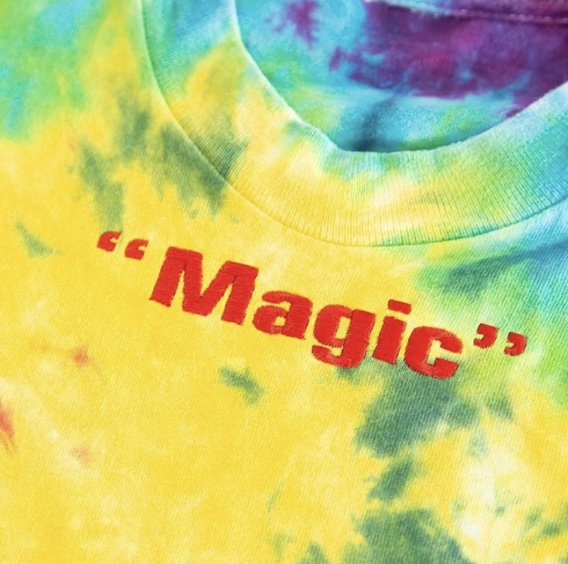
➤ 木牙MUYA: Jason平时的生活中，如何为设计和作品收集材料和灵感的？
How do you collect and collaborate with your materials and inspirations for your work?
Jason: 我是许多事物的疯狂收集者，收集我感兴趣的事物和使我兴奋的事物都是我灵感的来源。我从来都不知道这些会如何在我的作品中发挥作用，但我相信我的实践作品会延伸到我生活的方方面面。
I am a crazy collector of many things and with the things I am interested in and the things that excite me are all sources of inspiration. I never know where its going to work its way into my work but I believe my practice extends to every facet of my life.
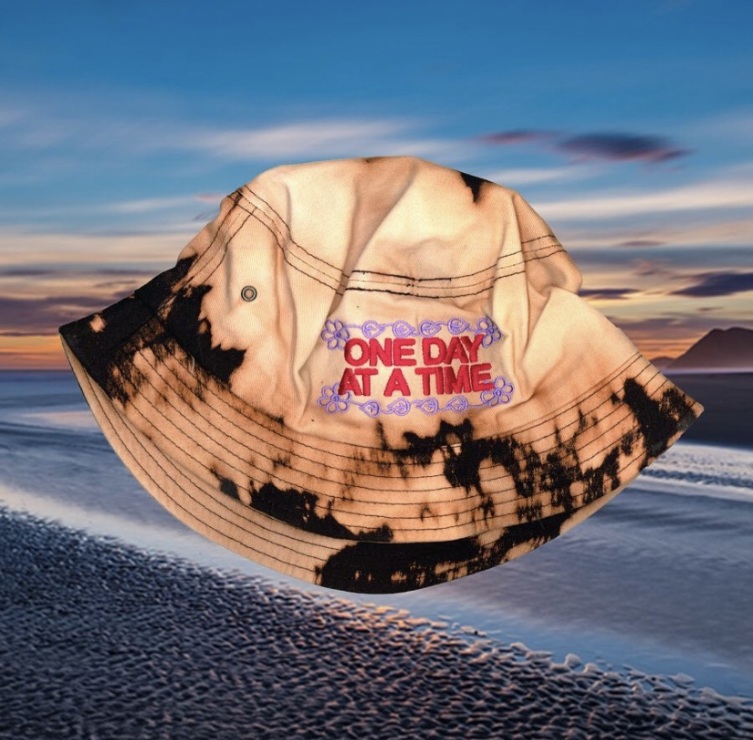
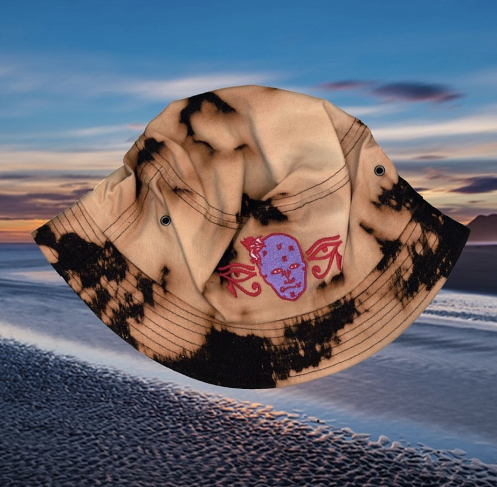
➤ 木牙MUYA: Jason为什么喜欢服饰的创意设计？您设计的杂志书籍又有着怎样的相关呢？作为艺术家或者设计师，让你觉得开心兴奋的时刻是怎样的？
Why are you really into cloth material creation? How is the connection between the zine you designed? What is your exciting time to be an artist or designer？
Jason: 时尚总是让我感到有趣，而T恤是进入时尚世界的便利切入点。我一直都在收集T恤和书籍，所以对我来说，开始制作自己的东西是很自然的。“翻玩”（Bootleg）哲学，创造你想要的东西，创造你想要在世界上看到的东西。
Fashion has always interested me and t-shirts are an accessible entry point into that world. I have always collected t-shirts and books so it was only natural for me to start making my own. Bootleg philosophy, make the things you want, make the things you want to see in the world.
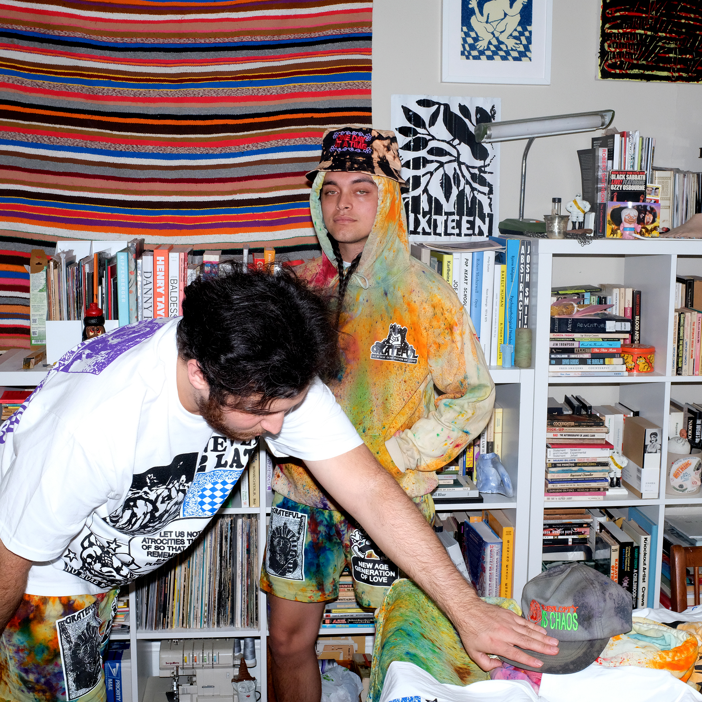
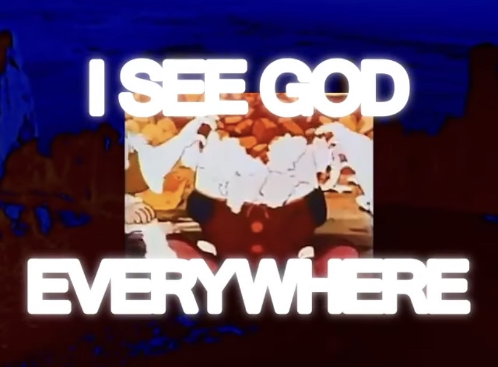

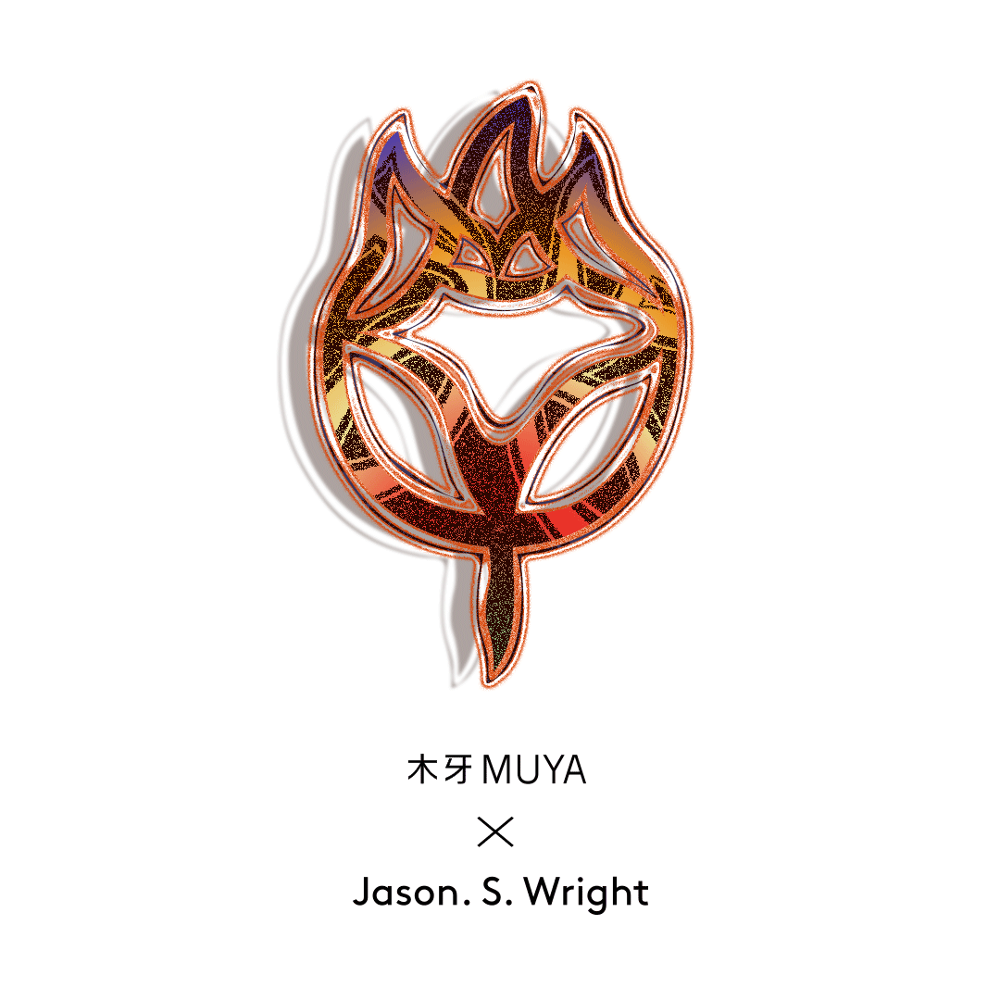
✯ Which inspire Jason. S. Wright most ✯
“One Day At A Time.”
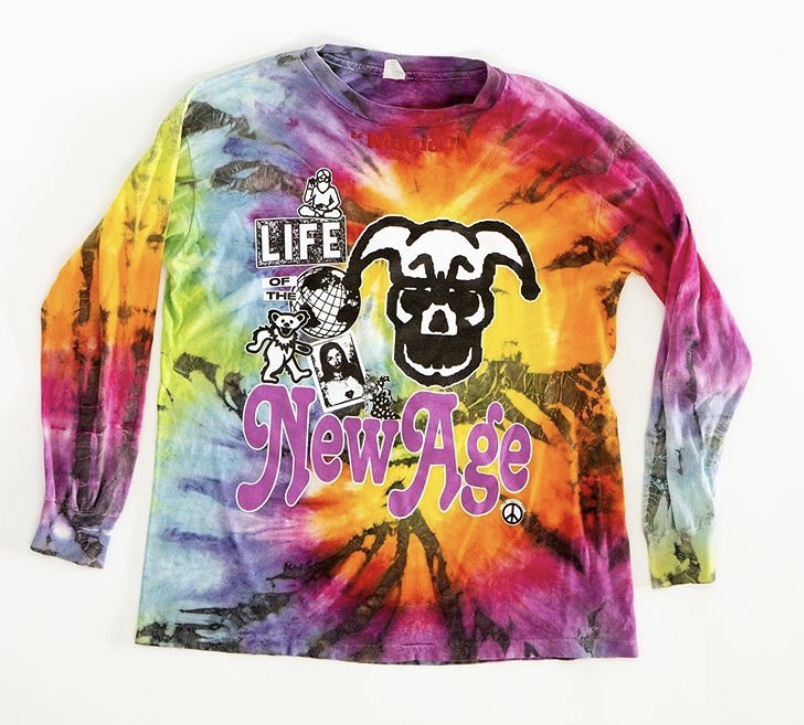
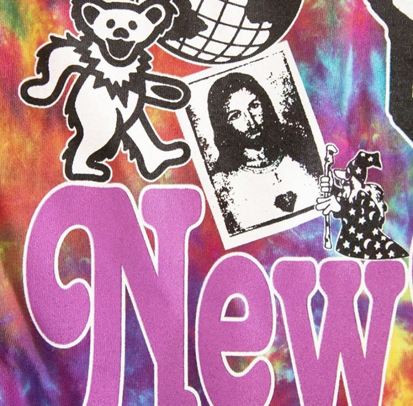
✤ Jason. S. Wright网站（Jason. S. Wright Website)
✤ UDLI Editions网站（UDLI Editions Website)
✤ Jason. S. Wright邮箱（Contact Email)： jswrightstudio@gmail.com
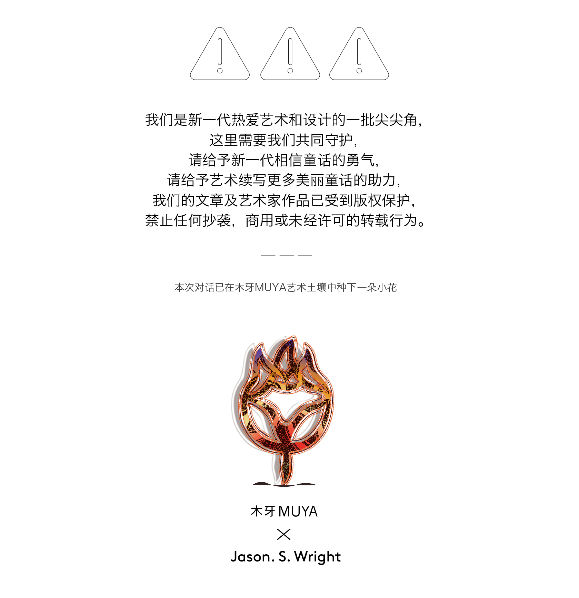
木牙微信订阅号